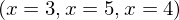
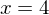

Expression of type Len¶
from the theory of proveit.logic.sets.inclusion¶
In [1]:
import proveit
# Automation is not needed when building an expression:
proveit.defaults.automation = False # This will speed things up.
proveit.defaults.inline_pngs = False # Makes files smaller.
%load_expr # Load the stored expression as 'stored_expr'
# import Expression classes needed to build the expression
from proveit import x
from proveit.core_expr_types import Len
from proveit.logic import Equals
from proveit.numbers import five, four, three
In [2]:
# build up the expression from sub-expressions
expr = Len([Equals(x, three), Equals(x, five), Equals(x, four)])
Out[2]:
In [3]:
# check that the built expression is the same as the stored expression
assert expr == stored_expr
assert expr._style_id == stored_expr._style_id
print("Passed sanity check: expr matches stored_expr")
In [4]:
# Show the LaTeX representation of the expression for convenience if you need it.
print(expr.latex())
In [5]:
expr.style_options()
Out[5]:
In [6]:
# display the expression information
expr.expr_info()
Out[6]:
| core type | sub-expressions | expression | |
|---|---|---|---|
| 0 | Operation | operator: 1 operand: 3 | |
| 1 | Literal |  | |
| 2 | ExprTuple | 3 | |
| 3 | ExprTuple | 4, 5, 6 |  |
| 4 | Operation | operator: 9 operands: 7 |  |
| 5 | Operation | operator: 9 operands: 8 |  |
| 6 | Operation | operator: 9 operands: 10 |  |
| 7 | ExprTuple | 13, 11 | |
| 8 | ExprTuple | 13, 12 | |
| 9 | Literal |  | |
| 10 | ExprTuple | 13, 14 | |
| 11 | Literal |  | |
| 12 | Literal |  | |
| 13 | Variable |  | |
| 14 | Literal |  |